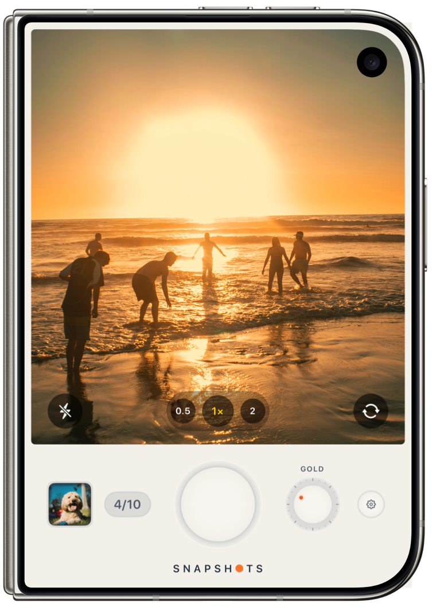
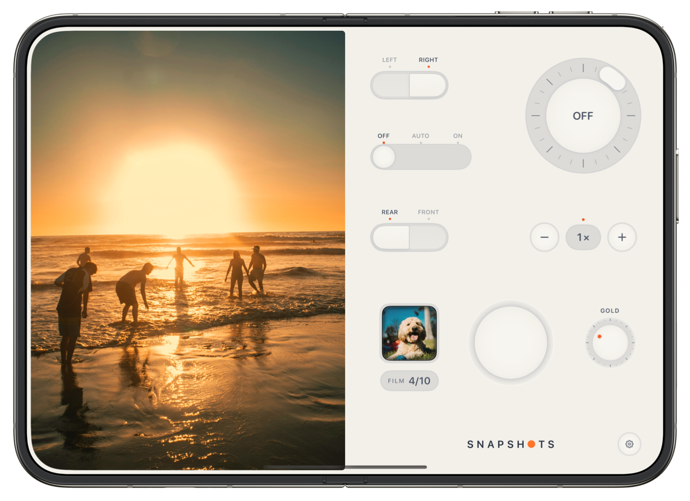
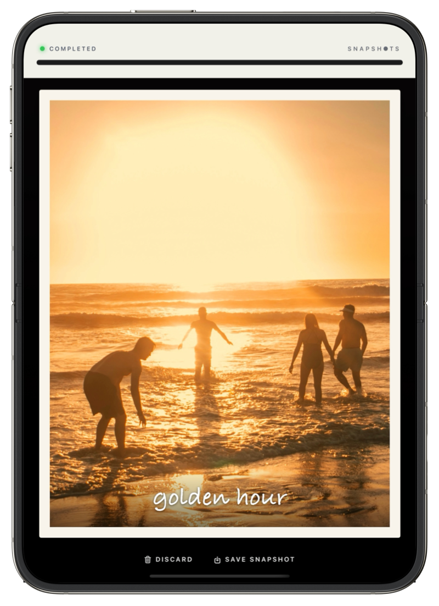
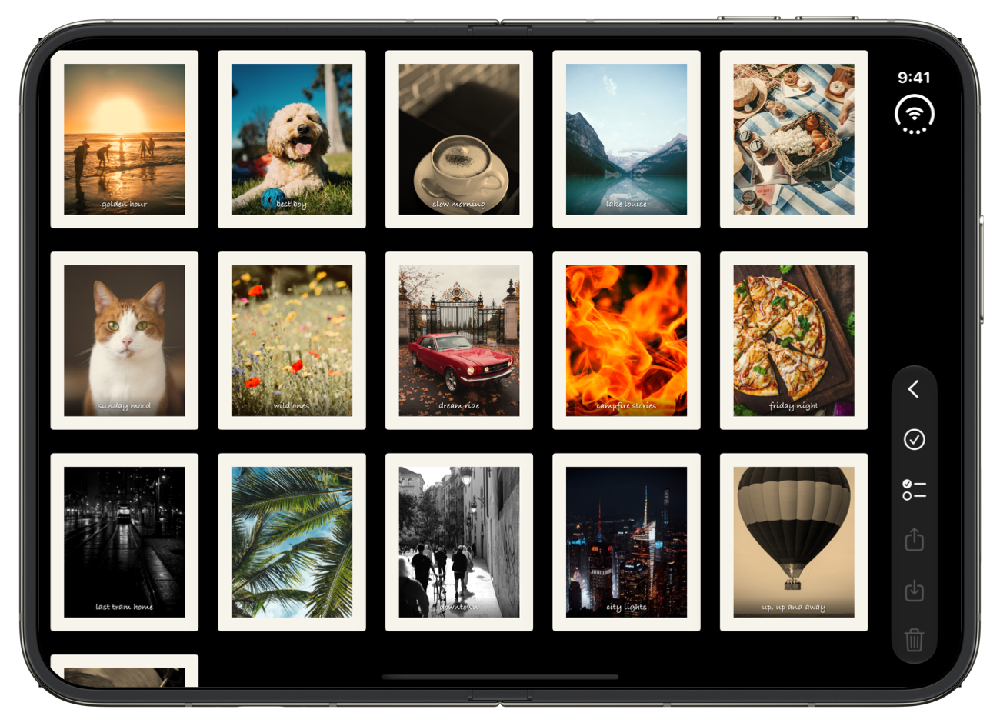
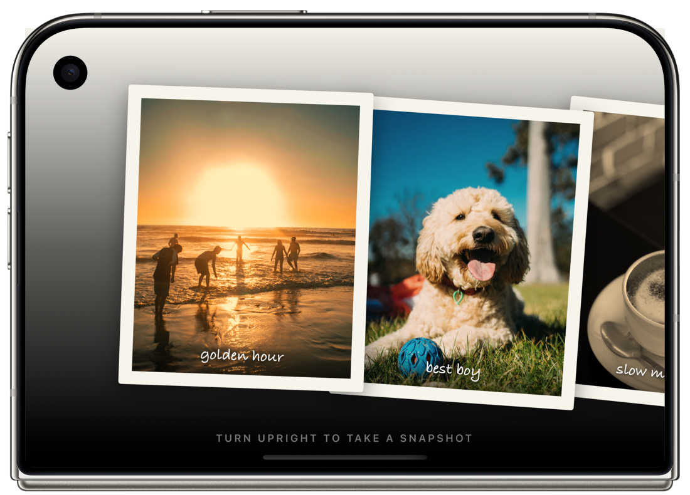
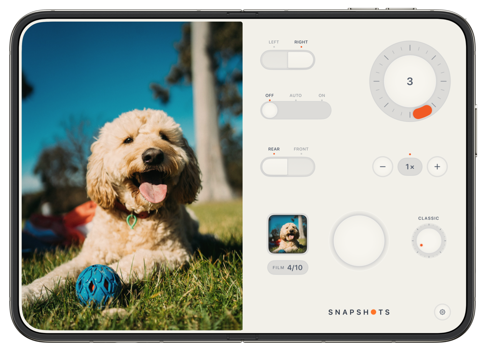
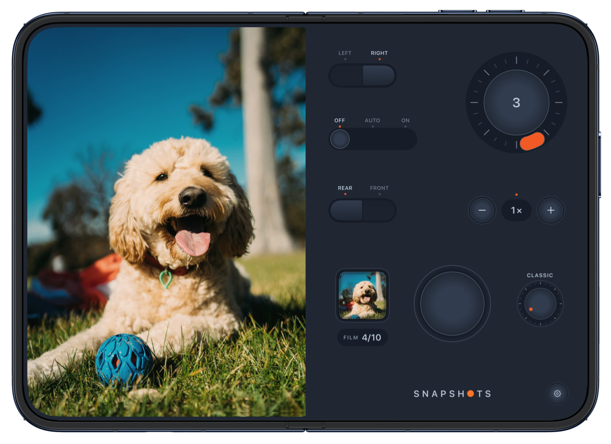
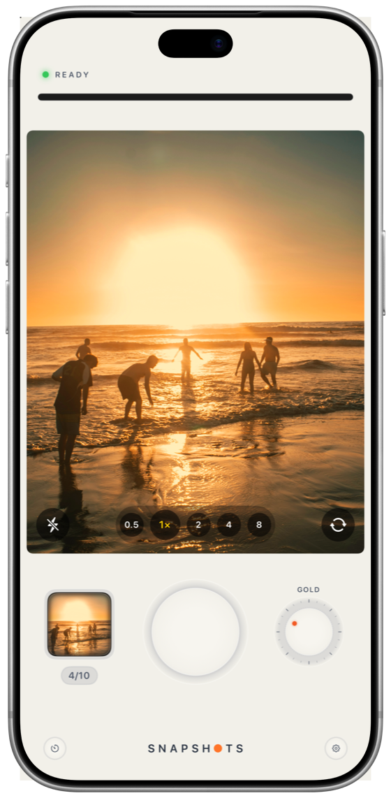
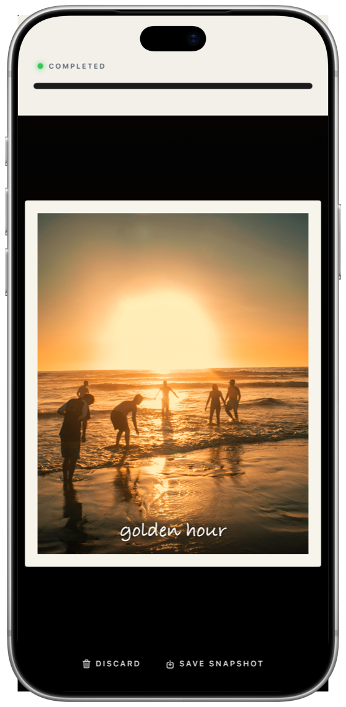

Closed
A pocketable instant camera
Everything you need on the front display: shutter, film dial, zoom and your last print.
Snapshots is an instant camera built around the fold. Shoot with your iPhone Duo in the Seated pose, then unfold it flat and watch your photo print.
Instant cameras made you wait for the picture. Snapshots makes that the best part, and puts it in your hands.
The upper screen is your viewfinder. The lower one becomes a camera body, with a shutter worth pressing.
The printer whirs and your photo waits in its slot, just peeking out.
Open the phone flat and the print feeds out onto a table to display in full view.
The picture fades up like instant film. Shake to hurry it along, then write a caption across it.
Snapshots rearranges itself around the fold, so the controls are always under your thumbs and the viewfinder is always where you're looking.

Everything you need on the front display: shutter, film dial, zoom and your last print.
Viewfinder up top, flash, zoom and shutter below. Set it down, start the self-timer and step into the picture.

A clear viewfinder on one side and the whole camera on the other. Flip a rocker to swap them for your left or right hand.

Laid flat, the whole display is the printer's table, with your print enlarged to fill it.
Open the gallery on the big display and your prints are spread out in front of you, with share, save and delete down the side where your thumb is.

Fold it shut and turn it sideways, and the front display lays your prints out like photographs on a table. Flick through them, and tap one to pick it up.

No floating glass buttons. Snapshots has a camera body, with parts that move the way real ones do.


Turn the dial and the viewfinder changes live, so what you see is what prints.
 golden hour
golden hourToo excited to wait? Give the phone a shake and the picture comes up at once.
Write across the foot of the photo, and a longer note on the back of the print.
Every snapshot you keep goes in the gallery, ready to share or save to Photos with its border and caption.
Three or ten seconds, on a dial. Made for a phone that stands up by itself.
Tap to focus, press and hold to lock, then slide to brighten or darken.
No accounts, no ads, no tracking. Your photos stay on your phone.


Snapshots runs on every iPhone too. The printer sits across the top of the screen and your photo feeds out of it by itself.
I've always been a huge fan of Apple products. I waited in line for the original iPhone, and I still remember the feeling of holding it for the first time: new, exciting and fun, like nothing I'd held before. It felt like the future!
Ever since that day I've wanted to build an app of my own. I just never found a reason big enough to start. iPhone Duo is that reason.
It brings that same feeling back, and inspired me to create something for it straight away. Snapshots is my first app, and the first thing I've ever felt compelled to make and share with the world.
I hope Snapshots gives you a little of that feeling too, and a shoebox full of memories worth keeping.
Ryan Fredericks